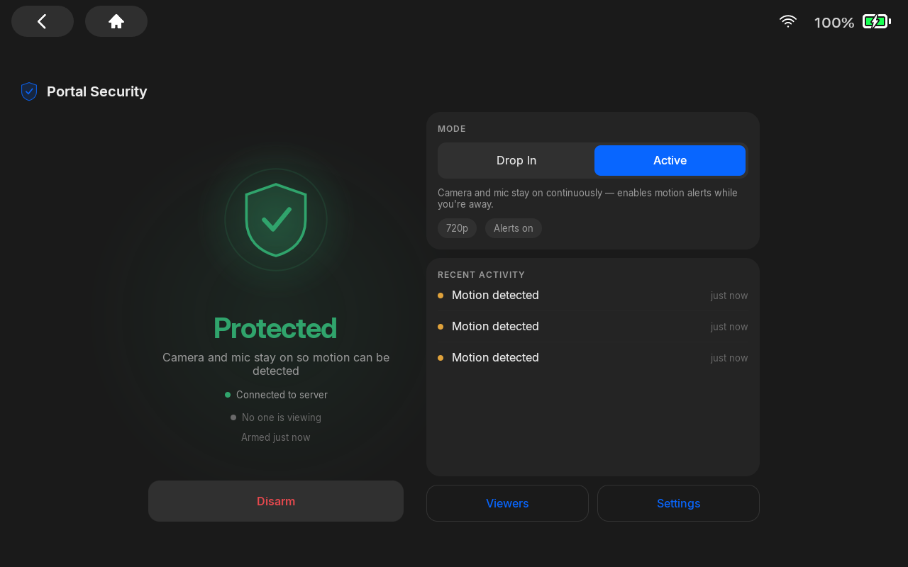
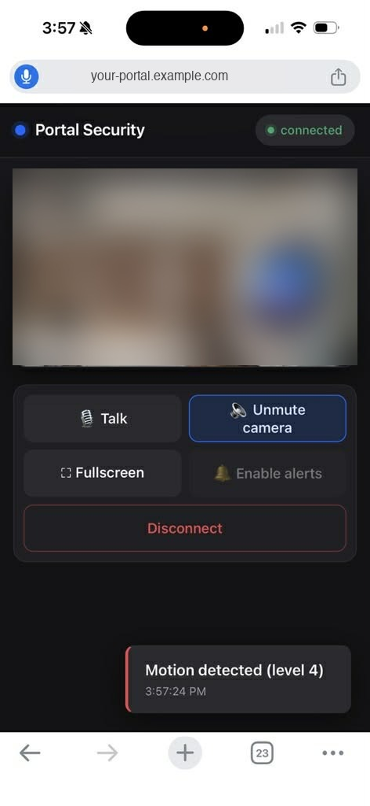
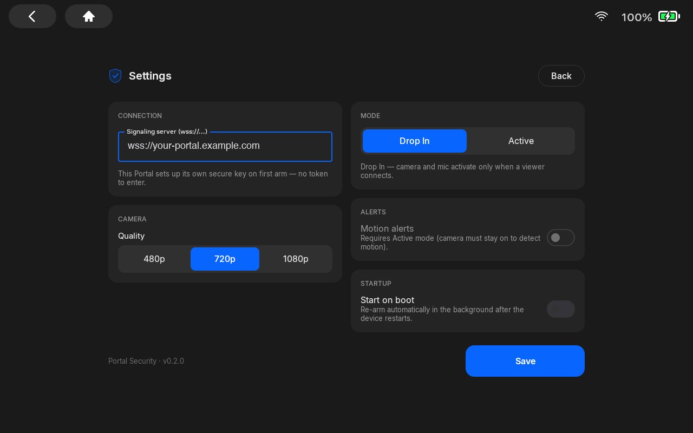
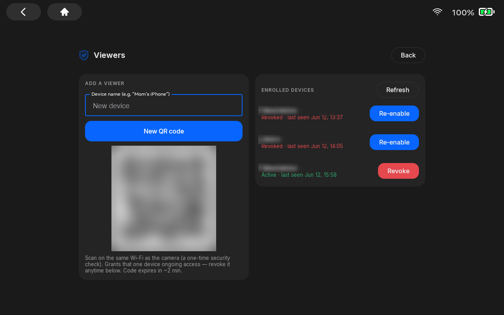

Turning a Discontinued Meta Portal Into a Home Security Camera
Meta added ADB support to Portal. Here's what I built with mine — and the security model behind it.
I worked on Meta Portal a few years ago — the smart display whose standout feature was a camera that auto-framed you as you moved around the room. Meta discontinued the consumer Portal line in 2022, and mine had been sitting unused since.
Recently, Meta added ADB support to Portal devices (documentation here) — meaning you can connect over the Android Debug Bridge and sideload your own apps. Portal has always been Android underneath, so this effectively reopens it as a development platform.
That reframes an idle Portal as what it physically is: an always-on, wall-powered device with a good camera, a microphone, a speaker, and a screen. Most of a security camera, in other words. So I built the rest.
The whole thing is open source: github.com/Ishtiaqhossain/portal-security-camera.

What it does

- Live view from any browser — nothing to install for whoever's watching.
- Two-way audio — listen, and talk back through the Portal's speaker. (Portal was always a two-way device.)
- Motion alerts via Web Push, delivered even when no tab is open.
- Two capture modes: Active streams continuously and runs motion detection; Drop In keeps the camera and mic off until a viewer connects, then wakes on demand — lower power, and nothing is captured when no one is watching.

Architecture
Three parts: the Portal (the camera agent), a small signaling server on a VPS, and the browser viewer. The key property is that video and audio never touch the server — they go peer-to-peer over WebRTC. The server only introduces the two sides and handles auth.
Signaling and auth go to the VPS over WSS; the media flows directly between Portal and browser.
- Portal app (Kotlin/Compose) captures camera + mic, answers WebRTC offers, runs motion detection, and shows a status dashboard — not the feed itself; the feed is for remote viewers.
- Signaling server (Node) brokers the SDP/ICE handshake, handles enrollment and auth, and relays motion events. It never sees media.
- coturn is a TURN relay used only as a fallback, for cases where the two peers can't reach each other directly (e.g. a viewer on cellular behind carrier-grade NAT).
- Caddy terminates TLS with an automatic Let's Encrypt cert. The whole backend is a three-service
docker-composestack on one small VPS.
The security model
A camera pointed at a home is a high-value target, so most of the work went into the trust model rather than the video path. Two decisions worth calling out:
1. No shared password for viewers. To grant access, the owner generates a single-use QR code on the Portal. A viewer scans it — and the server only accepts the enrollment if the scanning device is on the same Wi-Fi as the camera (it compares public IPs). Physical/network presence becomes the enrollment factor. Each device then gets its own identity and a revocable, short-lived session: a 15-minute access token refreshed against a 30-day, revocable refresh token. You can cut off any one device instantly.

2. The camera authenticates with a key, not a token. On first run the Portal generates an EC P-256 keypair in its hardware-backed Keystore — the private key never leaves the device. It authenticates by signing a server-issued nonce (challenge-response). The server stores only the public key, so a server compromise can't be used to impersonate the camera, and there's no shared camera secret to leak.
Supporting hardening: TLS everywhere, DTLS-SRTP on the media, admin-login rate-limiting with lockout, security headers, and a per-connection error boundary so one bad message can't take the server down.
Running it
It runs on a Portal Go in my house, with the backend on a $5/month VPS behind a free DuckDNS hostname. Deploys are a git push — a small poller on the VPS pulls main and rebuilds the compose stack. Enrollment requires being on the home network, so each device is set up once at home, then works from anywhere.
Why bother
Mostly because the alternative was a capable device going to landfill. A cancelled product doesn't have to mean a bricked one — opening up ADB is a small change that turns "discontinued" into "platform." If you have a Portal in a drawer, it's a more useful device than its end-of-life suggested. The code is on GitHub; point it at your own and change what you want.